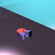
 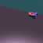
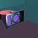
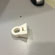
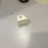
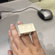
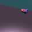
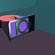
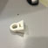
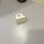
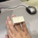
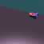
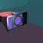
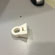
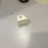
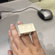
I enjoyed this assignment because I learned how to use the 3D-modelling program, 3D X Max, and I was able to print a plastic prototype with the 2D rapid prototype printer. Although I have never been very interested in jewelry, the concepts that I learned are applicable to other fields. Understanding basic geometry was necessary to make the ring, and these principals are true for both 2D and 3D renderings.
I used cubes and pyramids to create my ring. I used a ceramic material and lighted the project with omni light. The ring is made up of a red cylinder with a purple ornamentation (a pair of pyramids flanking a cube with a continuous face that is composed of the bases of the three solid elements). There is a green metallic-finish decoration on the face composed of a frame and a central circle flanked by two columns.
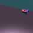
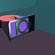
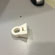
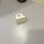
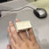